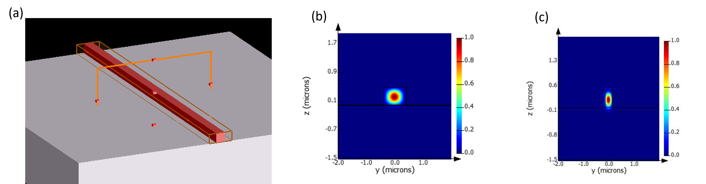
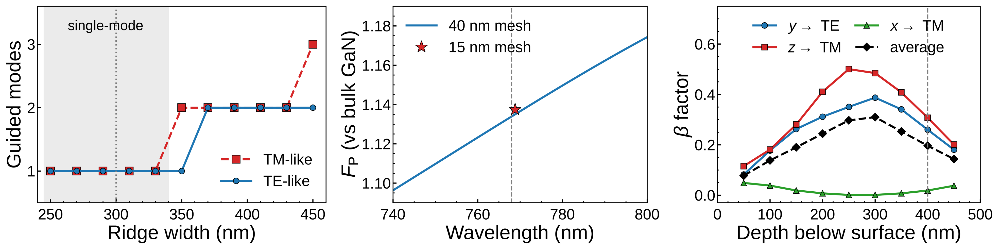
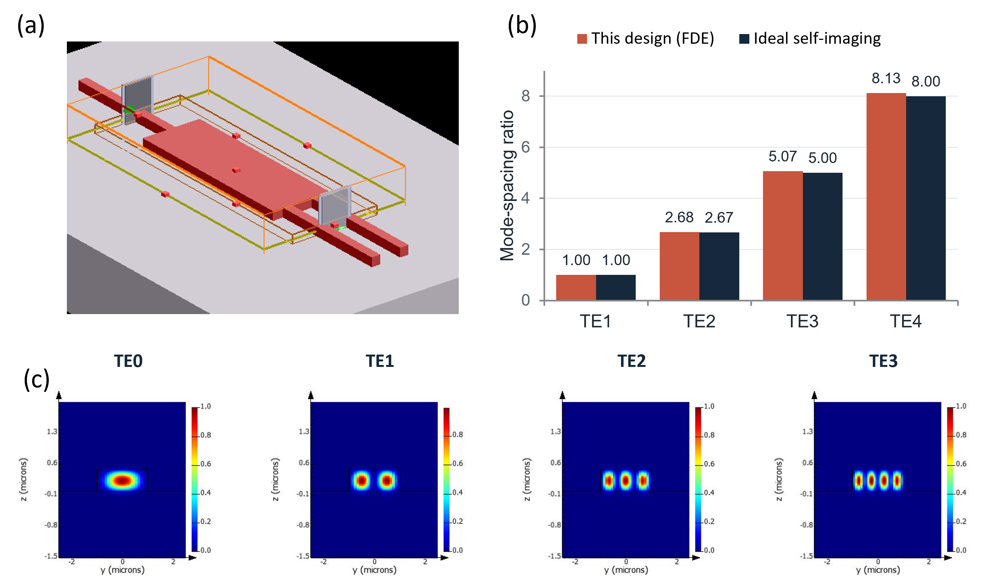

What I wanted to achieve
My M.Sc. work characterizes room-temperature single-photon emitters in p-type GaN on an optical table, using a confocal microscope and a Hanbury Brown and Twiss (HBT) interferometer I built and automated myself. That setup works, but it is large, alignment sensitive, and it loses light at every lens and every fiber.
Photonic integrated circuits are where my own interest has been pulling me for a while. A free-space table can prove that an emitter is quantum; it cannot be scaled. To turn a single good emitter into real quantum hardware, the emitter, the waveguides, the splitters, and the detectors have to live on the same chip. That is the only honest path to scalability, so I taught myself the design tools and took the first step on my own initiative.
The target was concrete: design the front end of an on-chip HBT measurement. An emitter sitting inside a GaN waveguide, the waveguide carrying its photons to a 50:50 splitter, and the splitter feeding two outputs, all designed at 768 nm, the emission wavelength of one of my own MBE-grown p-GaN emitters.
Single mode waveguide
A photonic circuit starts with its waveguide. I wanted the widest GaN ridge that still guides a single mode of each polarization, because a single-mode guide sends every captured photon into one well-defined path. I modeled a 500 nm tall GaN ridge on sapphire and swept its width with the eigenmode solver. The ridge stays single-mode up to 330 nm, so I chose 300 nm, which keeps the light tightly confined and leaves room for fabrication error.

How much light the waveguide captures
A waveguide is only useful if the emitter's light actually enters it. I placed a dipole source inside the ridge to represent the emitter and ran full 3D FDTD simulations, then extracted the β factor, the fraction of emitted photons captured by the guided mode, and the Purcell factor, which says how much the waveguide changes the emission rate. Every result was checked against a finer mesh and moved by less than 1%.

The on-chip beam splitter
The heart of an HBT measurement is a 50:50 beam splitter. On a chip that role is played by a multimode interference (MMI) splitter, a short wide section of waveguide where several modes interfere and re-form two copies of the input light. I designed it for the TE-like mode, which matches the in-plane emission I see in my polarization measurements. From the mode analysis, the first 50:50 self-image forms at a length of 5.88 µm, and the mode spacings follow the ideal self-imaging pattern almost exactly, with only a small phase error in the highest mode.

What I got
- A single-mode GaN-on-sapphire waveguide at the emitter wavelength: a 300 nm by 500 nm ridge, single-mode up to 330 nm.
- A vertically oriented emitter at the center of the ridge sends up to 50% of its photons into the waveguide; a sideways emitter reaches 39%.
- At the depth where my real emitters sit, 400 nm below the surface, the waveguide still captures 26% to 31% of the light depending on orientation.
- The emission rate barely changes, so the waveguide collects the light without distorting the emitter's photophysics.
- The chip layout has to follow the emitter's polarization: a waveguide running along the dipole axis captures almost nothing.
- A 1×2 MMI splitter designed from mode analysis, with the first 50:50 image at 5.88 µm.
Next steps
Confirm the 5.88 µm splitter with eigenmode expansion and independent 3D FDTD runs, tune its length across the full 740 to 800 nm emission band, then connect all the parts in Lumerical INTERCONNECT on top of the real GaN layer stack.
Reference: L. B. Soldano and E. C. M. Pennings, J. Lightwave Technol. 13, 615 (1995).